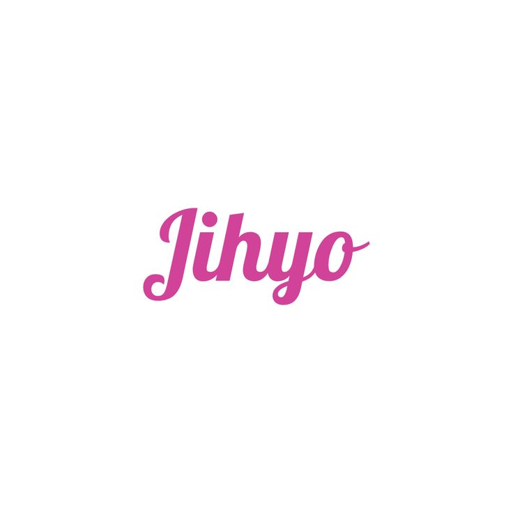

Park Ji-hyo
Biodata
- Nama Lengkap: Park Ji-soo (Park Ji-hyo)
- Tanggal Lahir: 1 Februari 1997
- Posisi: Leader, Main Vocalist
- Golongan Darah: O
- Tinggi: 160 cm
- Hobi: Menyanyi, membaca, olahraga ringan
Biografi & Perjalanan Karier
Park Ji-hyo, lahir dengan nama Park Ji-soo pada 1 Februari 1997 di Guri, Provinsi Gyeonggi, Korea Selatan, adalah sosok inspiratif di industri musik Korea yang menunjukkan arti sebenarnya dari kerja keras dan dedikasi. Sejak usia muda, bakatnya dalam bernyanyi dan tampil di depan publik sudah menonjol. Saat masih kecil, ia memenangkan posisi kedua dalam kontes Naver Junior Child Star pada tahun 2005, yang mengantarkannya bergabung dengan JYP Entertainment sebagai trainee pada usia 8 tahun. Sejak saat itu, Jihyo menghabiskan lebih dari satu dekade berlatih vokal, tari, dan berbagai aspek performa hingga menjadi salah satu trainee terlama di agensi tersebut.
Masa pelatihan Jihyo bukanlah perjalanan yang mudah. Ia menyaksikan banyak rekan-rekan trainee datang dan pergi, sementara dirinya terus bertahan dengan semangat dan komitmen tinggi. Di masa itu, Jihyo sempat hampir debut dalam sebuah girl group bersama Jeongyeon, Sana, dan beberapa trainee lain, namun proyek tersebut dibatalkan. Meski sempat merasa kecewa, Jihyo tidak menyerah. Ia terus berlatih dan mengembangkan vokalnya yang kuat serta teknik panggung yang matang, menjadikannya salah satu aset vokal paling berharga di JYP saat itu.
Pada tahun 2015, Jihyo mengikuti program survival JYP berjudul SIXTEEN, yang menentukan siapa saja yang akan menjadi anggota girl group baru — TWICE. Di tengah persaingan yang ketat dan tekanan mental, Jihyo tampil menonjol karena kualitas vokalnya, kepemimpinannya, dan sikap positifnya. Ia resmi terpilih sebagai anggota TWICE dan secara mengejutkan dipilih oleh para member sebagai pemimpin grup, menjadikannya leader pertama di JYP yang dipilih oleh suara anggota, bukan ditentukan oleh agensi. Hal ini menunjukkan besarnya rasa hormat dan kepercayaan dari para member terhadap Jihyo.
Sejak debut pada Oktober 2015 dengan lagu “Like OOH-AHH”, TWICE segera meroket ke puncak popularitas. Jihyo tampil sebagai pusat vokal grup, mendukung nuansa emosional dari lagu-lagu TWICE yang dikenal catchy namun sarat makna. Bersama TWICE, ia merilis sederet lagu hits seperti “Cheer Up”, “TT”, “Likey”, dan “Feel Special”, dengan Jihyo kerap menjadi pusat dalam penampilan live maupun rekaman. Selain itu, Jihyo sering mewakili grup dalam wawancara dan variety show, menampilkan kepribadiannya yang hangat, humoris, dan cerdas.
Tahun 2019 menjadi momen penting bagi Jihyo ketika ia tampil memukau dalam ajang Melon Music Awards melalui lagu “Feel Special”. Penampilannya yang emosional membuat publik tersentuh dan memuji ketulusan ekspresi dan kekuatan vokalnya. Ia juga semakin aktif dalam kegiatan individu, termasuk menjadi bintang tamu variety show dan tampil sebagai penyanyi solo dalam beberapa kolaborasi spesial. Keberhasilannya tak hanya berasal dari suara indah, namun juga dari kerja keras, pengalaman, dan kemampuannya menginspirasi rekan satu grup.
Pada Agustus 2023, Jihyo resmi melakukan debut solo dengan mini album bertajuk “ZONE”. Album ini menampilkan sisi berbeda dari Jihyo yang lebih dewasa, mandiri, dan eksperimental. Lagu utama “Killin’ Me Good” sukses diterima dengan baik oleh publik dan kritikus, membuktikan bahwa ia bisa berdiri di panggung sebagai solois sekaligus menjadi pemimpin grup dengan integritas tinggi. Dalam proyek ini, Jihyo juga berperan dalam penulisan lagu dan konsep visual, menunjukkan kedewasaannya sebagai artis sejati.
Kini, Jihyo tidak hanya dikenal sebagai vokalis utama TWICE, tetapi juga sebagai mentor, panutan, dan simbol kekuatan perempuan muda di dunia hiburan. Ia kerap membagikan pesan positif tentang percaya diri, ketekunan, dan pentingnya mencintai diri sendiri. Perjalanan panjangnya dari trainee kecil hingga bintang global membuktikan bahwa kesuksesan sejati dibangun dengan kesabaran dan dedikasi tanpa henti. Karier Jihyo masih terus berkembang, dan publik dengan antusias menantikan langkah-langkah hebatnya di masa depan, baik bersama TWICE maupun dalam karier solonya.
Galeri Foto
.jpg)
.jpg)
.jpg)
.jpg)
Timeline Karier
- 2005 - Bergabung dengan JYP Entertainment
- 2015 - Terpilih melalui "SIXTEEN" dan debut di TWICE
- 2019 - Penampilan viral di MMA dengan lagu "Feel Special"
- 2023 - Solo debut dengan mini album "ZONE"
Kutipan Favorit
"Be confident, be strong. You are your own light. – Jihyo"
Komentar Penggemar